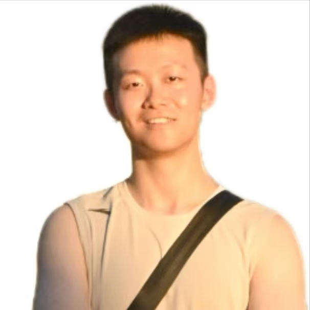
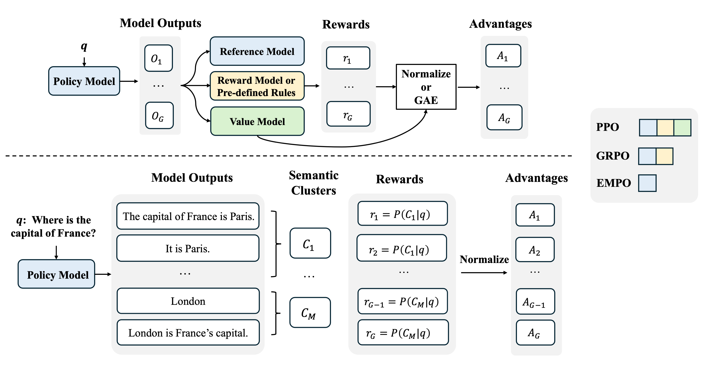
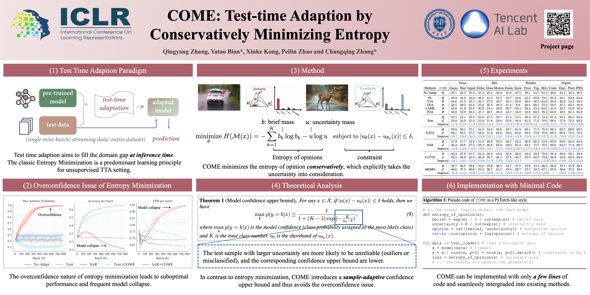
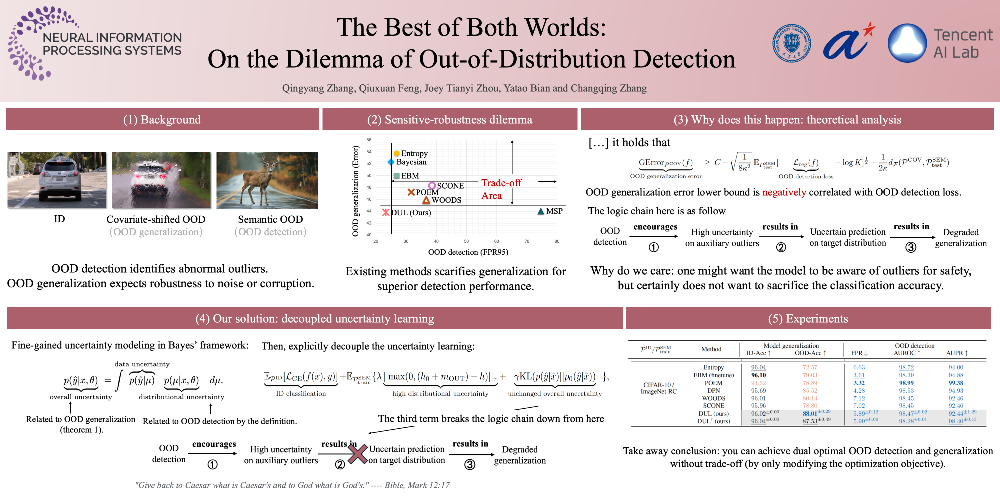
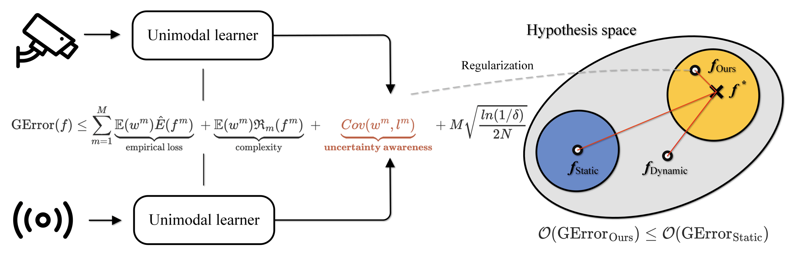
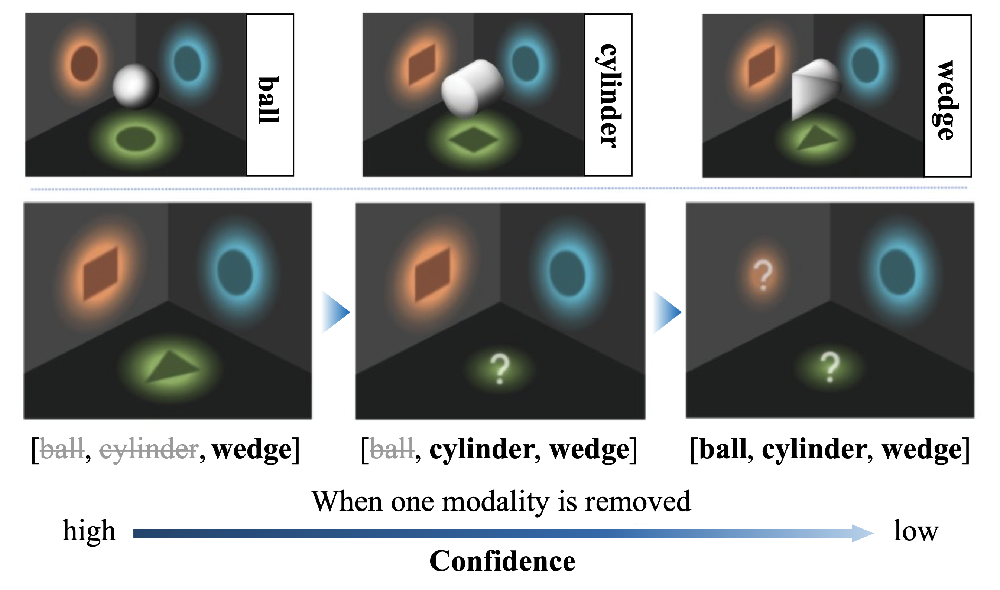
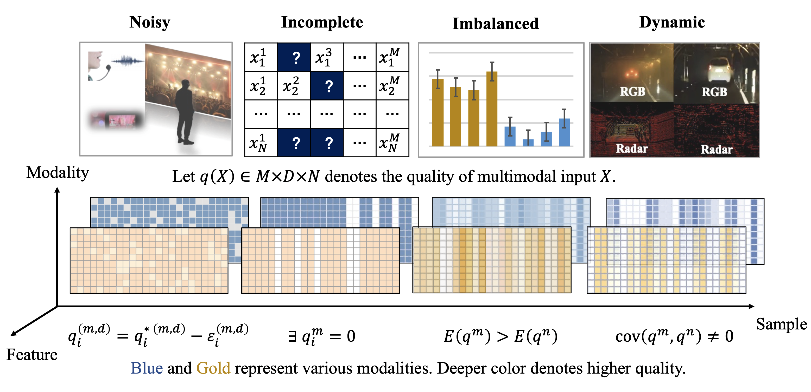

Hy4
Nov 2026Contributor · Tencent Hunyuan
Tencent Hunyuan's flagship LLM. Scaled-up post-training over Hy4 preview, with stronger long-horizon agentic and real-world productivity capabilities, and native visual understanding.
I am a 3rd-year PhD student at Tianjin University, supervised by Prof. Changqing Zhang. My research interests include Agentic RL, On-Policy Distillation (OPD) and Synthetic Data / Environment Scaling.
I received my Bachelor's degree from the School of Computer Science, Tianjin University. I then pursued my Master's at the same school and transitioned into a PhD candidate through the direct doctoral program (2+4) in 2024.
Currently, I am a research intern in the Post-train Team of Tencent Hunyuan LLM (Qingyun Talent Program), contributing to Hy4 preview and Hy4. I also spent wonderful time at Alibaba Qwen, Shanghai AI Lab and Tencent AI Lab.

Contributor · Tencent Hunyuan
Tencent Hunyuan's flagship LLM. Scaled-up post-training over Hy4 preview, with stronger long-horizon agentic and real-world productivity capabilities, and native visual understanding.
Contributor · Tencent Hunyuan
770B-A49B MoE with 1M context. #1 open-source model on Terminal Bench 2.1 and SWE-bench Multilingual at release.
Contributor · Shanghai AI Lab
Vision-language models for Physics Olympiad reasoning, trained with multi-stage RL. Strong results on HiPhO and FrontierScience-Olympiad.
Contributor · Shanghai AI Lab
Physics reasoning LLMs trained with RL. The first open-source model to win gold at IPhO 2025.






arXiv 2024
A systematic survey on fusion of low-quality multimodal data.
LLM post-training (Hy4 preview, Hy4).
Mentor: Dr. Minghao Wu.
Mentor: Dr. Ganqu Cui. RL post-training for physics reasoning (P1, P1-VL).
Mentors: Dr. Yatao Bian, Dr. Peilin Zhao. Focus on foundation models.
Conference Reviewer: ICLR 2022–2026, NeurIPS 2023–2025, ICML 2024–2025
"LLM RL with Internal Rewards" @ BUAA, Huawei 2012 Lab
National Scholarship (twice, top 1%), 2022, 2023